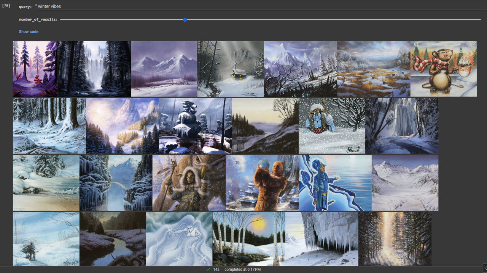

Artwork Search Engine with CLIP
Content-based search engine for artworks from Magic: The Gathering, using OpenAI's CLIP model.

CLIP is a model that was pre-trained to encode pairs of images and text descriptions such that their vectors are as close to each other as possible. So to us CLIP as a search engine, we first encode a collection of images, then encode a query string, and finally return the images whose vectors are closest to the query vector. In other words, we can search for images by their content.
For this project, I downloaded all 32,000+ unique card artworks from Magic: The Gathering, created a CLIP encoding vector for each artwork, and used cosine similarity to return the images that most closely matched the query vector.
Example: "stained glass"
Example: "winter vibes"

Example: "desolate ruins"
Example: "fire"